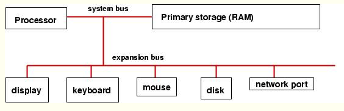
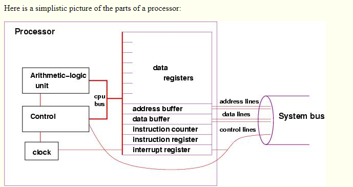

computer architecture main page
links:

computer architecture
A general-purpose computer has these parts:
processor: the ``brain'' that does arithmetic, responds to incoming information, and generates outgoing information
primary storage (memory or RAM): the ``scratchpad'' that remembers information that can be used by the processor. It is connected to the processor by a system bus (wiring).
system and expansion busses: the transfer mechanisms (wiring plus connectors) that connect the processor to primary storage and input/output devices.
A computer usually comes with several input/output devices: For input: a keyboard, a mouse; For output, a display (monitor), a printer; For both input and output: an internal disk drive, memory key, CD reader/writer, etc., as well as connections to external networks.
For reasons of speed, primary storage is connected ``more closely'' to the processor than are the input/output devices. Most of the devices (e.g., internal disk, printer) are themselves primitive computers in the sense that they contain simple processors that help transfer information to/from the processor to/from the device.
Here is a simple picture that summarizes the above:

Central processing unit
The processor is truly the computer --- it is wired to compute arithmetic and related operations on numbers that it can hold in its data registers. A processor is also called a Central Processing Unit (CPU).
Here is a simplistic picture of the parts of a processor:
